--- Import aut z USA i Kanady – nawet do 40% taniej niż w kraju --- 2020 FORD EXPLORER ST - auto do zakupu i importu z licytacji w USA. Prezentowany egzemplarz jest sprawny, odpala, jeździ, wyróżnia się dobrą konfiguracją i stanem technicznym. Lekka szkoda lewe drzwi przód. Pirotechnika cała. Niski koszt naprawy. Posiada normalne ślady użytkowania, pełną historię wraz z potwierdzonym przebiegiem. Podana cena obejmuje realny szacowany koszt sprowadzenia pojazdu, wraz z dostawą pod dom w tym odprawę celną, cło oraz vat. ZADZWOŃ: Przemek tel. Wojciech tel. Rynek aukcyjny w USA zmienia się dynamicznie. Zadzwoń, a przygotujemy dla Ciebie bezpłatną kalkulację tego lub innych dostępnych modeli (różne wersje silnikowe i kolorystyczne). Dlaczego AMER-POL: -- IMPORTER Z PONAD 25 LETNIM DOŚWIADCZENIEM -- ROCZNIE SPROWADZAMY DO KRAJU SETKI SAMOCHODÓW -- OFERUJEMY SZEROKI WYBÓR POJAZDÓW -- UMOŻLIWIAMY FINANSOWANIE ZAKUPU RATY/LEASING -- POSIADAMY WŁASNY MAGAZYN PRZEŁADUNKOWY W USA -- OFERUJEMY POMOC W NAPRAWIE AUT USZKODZONYCH Niniejsze ogłoszenie ma charakter informacyjny i nie stanowi oferty w myśl ART. 66, § 1. Kodeksu Cywilnego 44FOX-ID: 86398
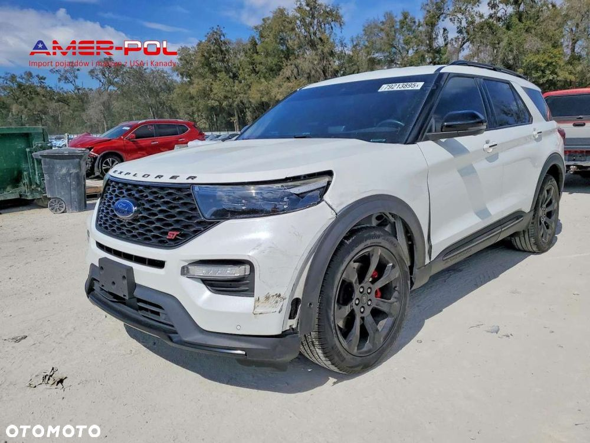
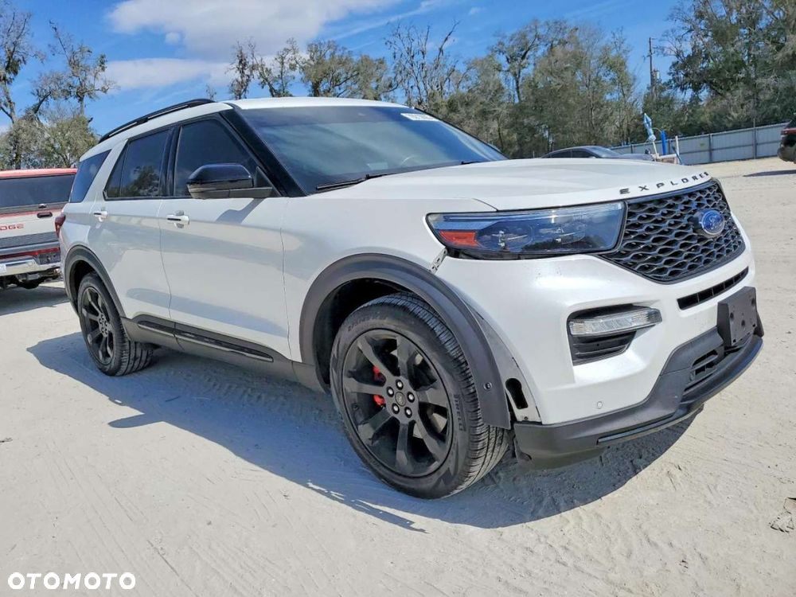
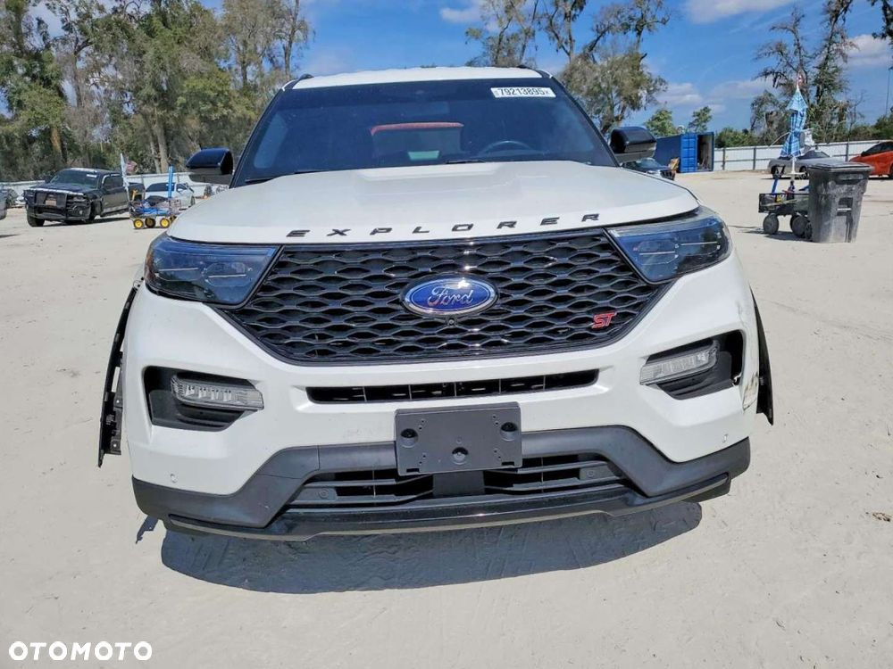
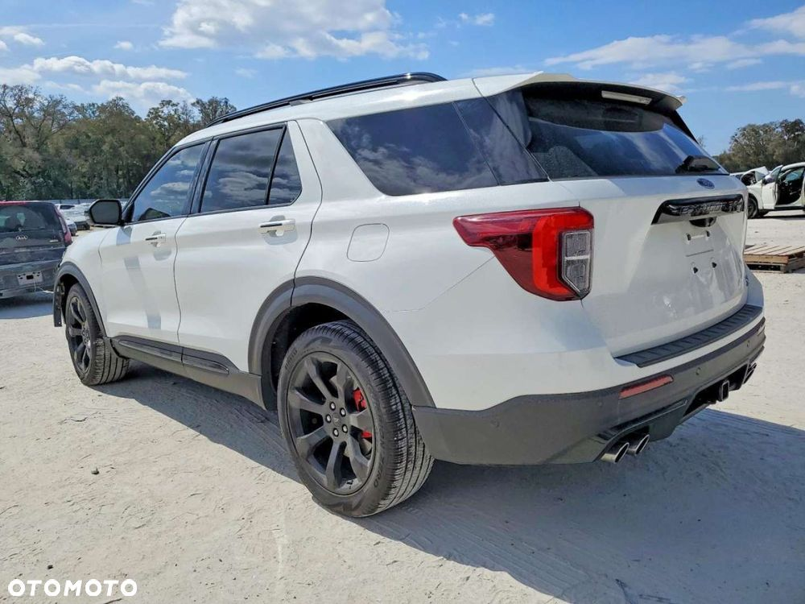
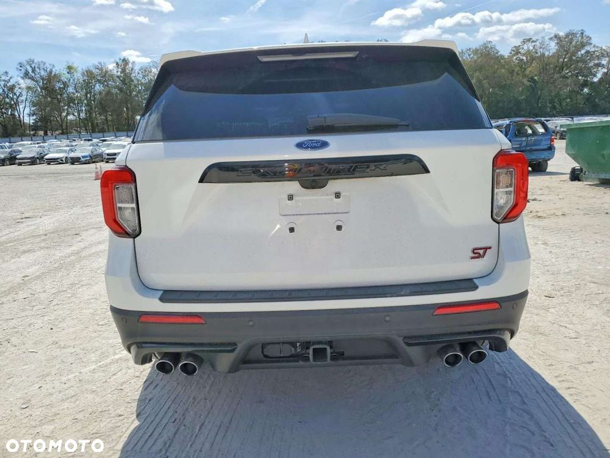
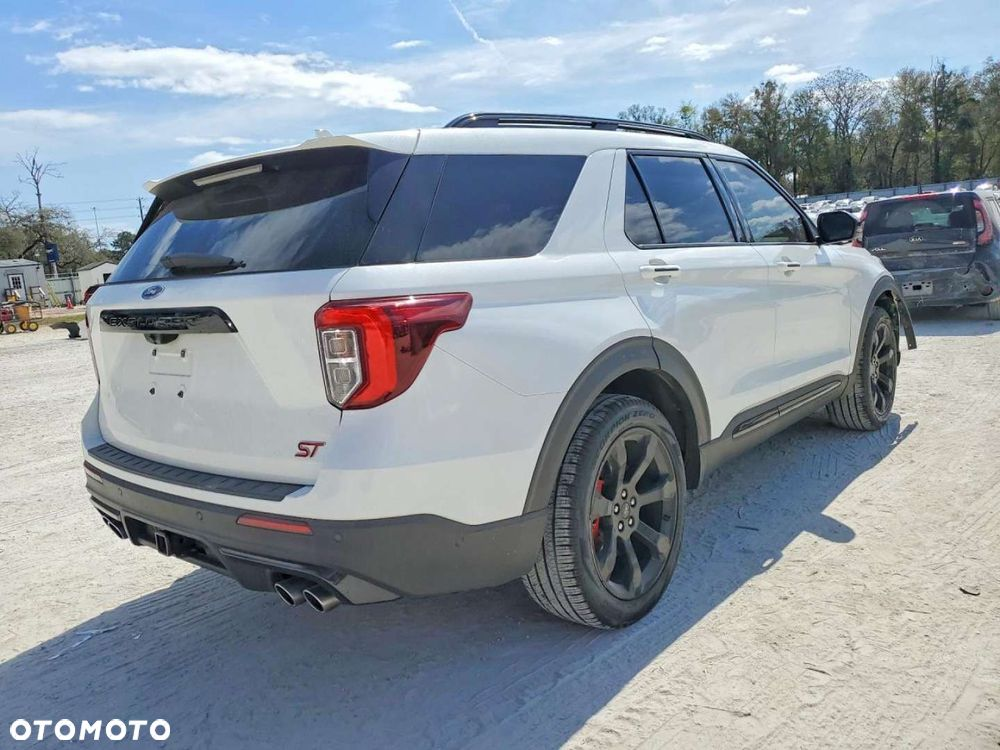
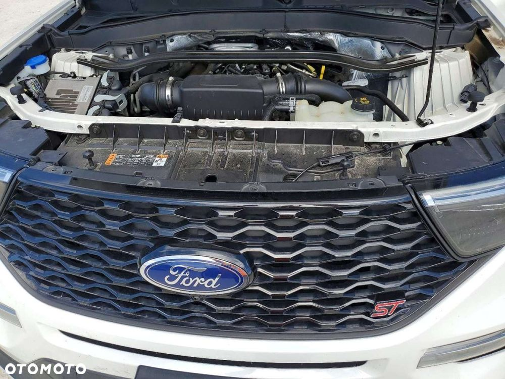
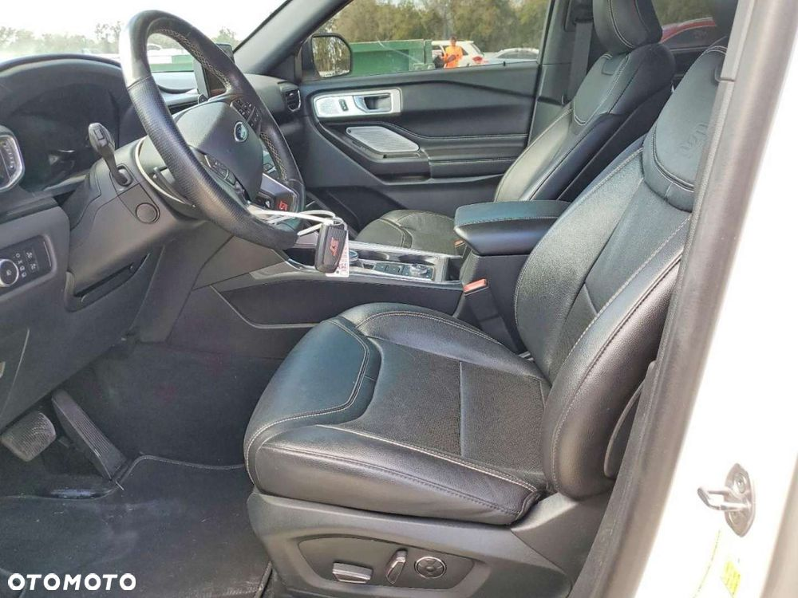
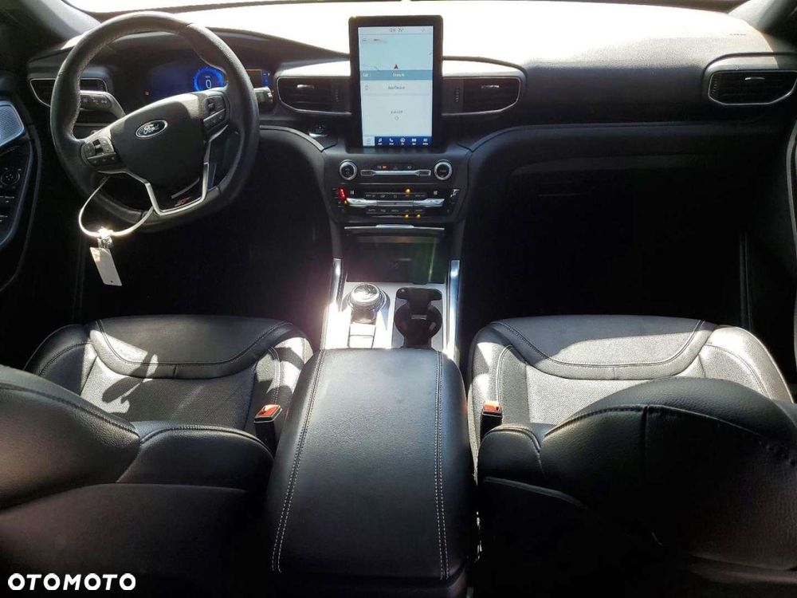
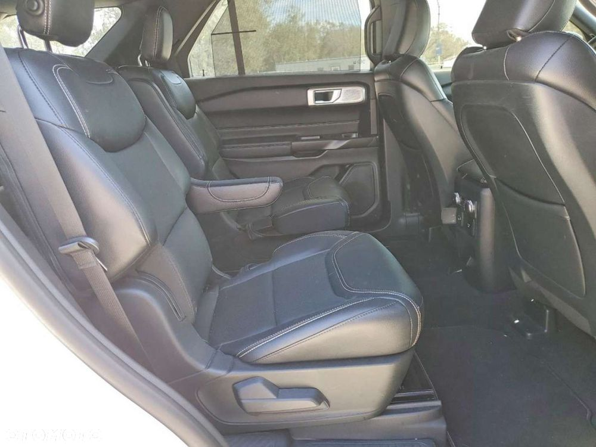
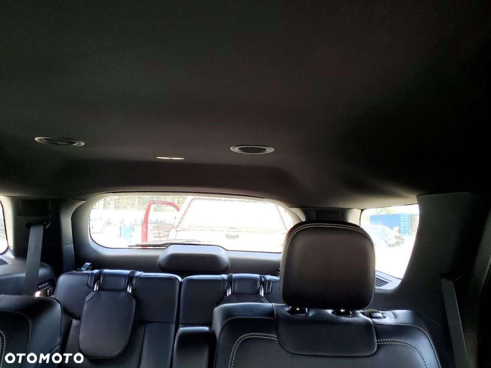
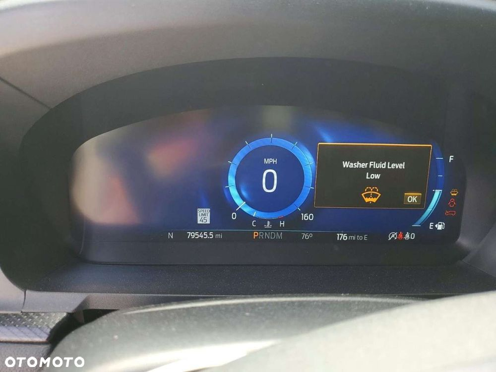
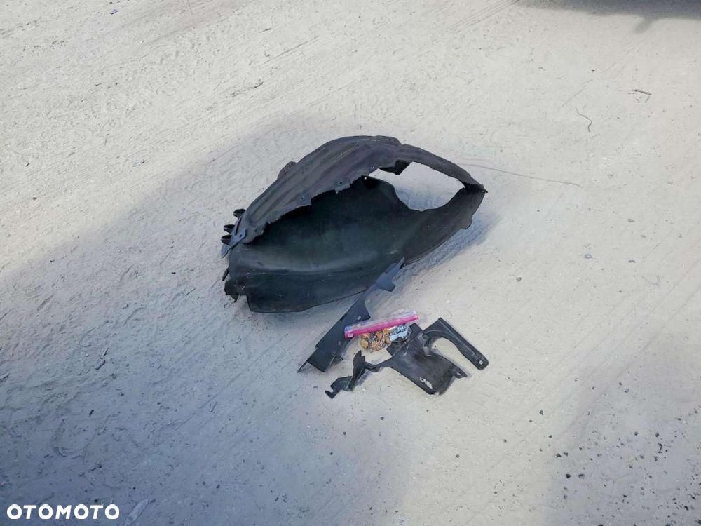